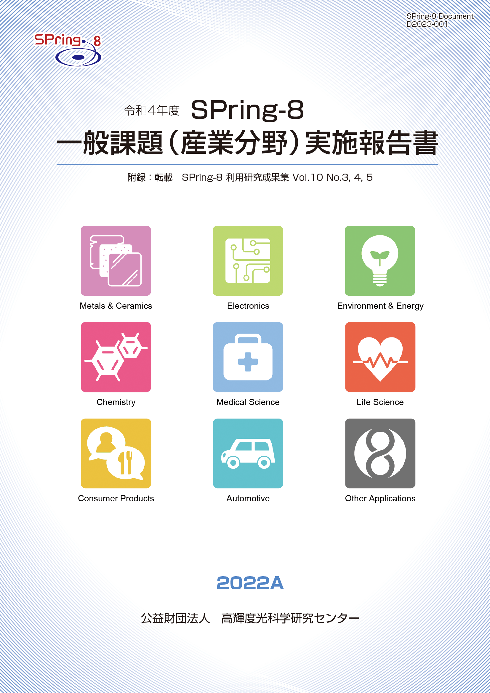
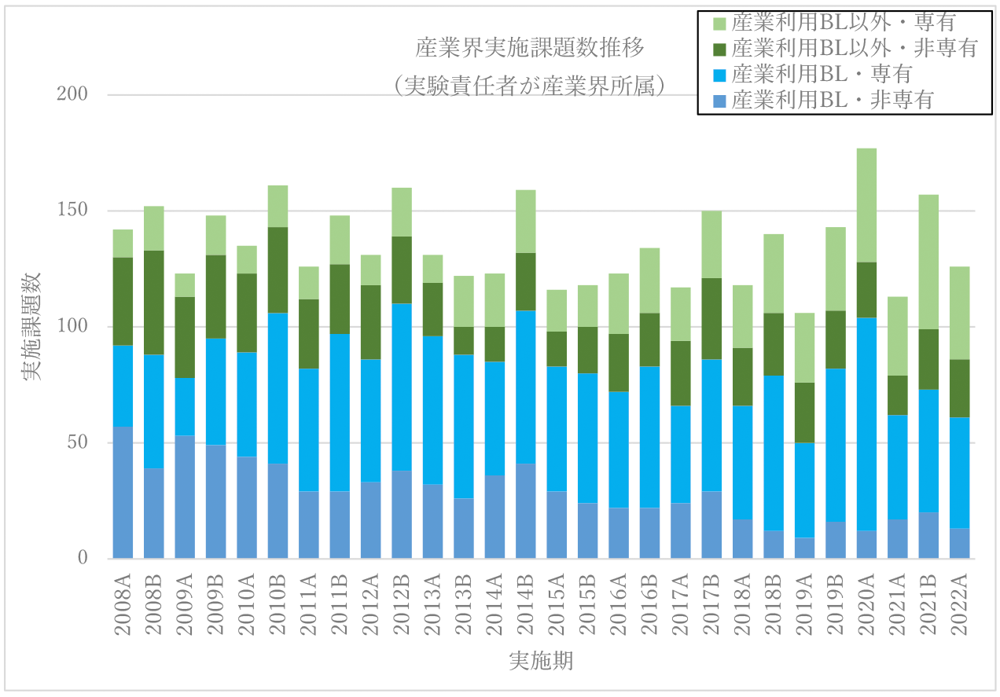

目次

1. はじめに2. 課題募集制度の概要
3. 成果公開の考え方
4. 実施状況
5. 産業利用分野の利用動向
6. 報告書
* 送付を希望される方は、連絡先（氏名、所属、〒住所、E-mail）をご記入の上、 事務局 support@spring8.or.jp までE-mailでご連絡ください。
はじめに
本報告書は2022A期に産業利用分野で審査・採択された一般課題（以降、一般課題（産業利用分野）と呼称）として実施された課題の実施状況の報告を目的として、SPring-8利用研究成果集としての審査を行わなかった課題の報告書を収録したものである。
本報告書が対象としている課題募集制度の概要
-
一般課題（産業利用分野）
- 成果非専有の一般課題の申請については一般課題（産業利用分野）のみ受付けている3本の産業利用ビームラインは、半期ごとに3回(1期、2期、3期)、年6回の課題募集を行う。その他のビームラインの募集は他分野の一般課題と同様に課題募集は年２回である。（産業利用ビームラインを指定した申請であるものの、審査希望分野が他分野の課題は申請者の希望にかかわらず産業利用分野で審査する）。*注1）
- 新規利用拡大の観点から課題審査において利用経験を考慮する。
- 民間企業利用拡大の観点から課題審査において所属機関を考慮する。
- 課題実施後約2～4か月以内に所定の書式の産業利用課題実施報告書を提出する。なお、この報告書はSPring-8利用研究成果集として審査を受けることも可能である。
- 全採択課題に担当コーディネーターを配置する。
- 科学技術的妥当性に関する審査は
(1)産業基盤技術としての重要性および発展性
(2)社会的意義および社会経済への寄与度の観点を重視して実施する
に重点をおいて実施する。
*注1）産業利用ビームライン3本でも大学院生提案型課題及び成果専有課題、成果公開優先利用課題は受付けている。大学院生提案型課題は一般課題（産業利用分野）と同様の審査が行われる。 - 産業利用ビームラインのうちBL46XUは2022A期よりHAXPES専用ビームラインに変更となり、同ビームラインで運用されていた多目的６軸X線回折装置はX線回折・散乱Iビームラインとして改造されたBL13XUに移設されて2022A期後半から同ビームラインで運用再開した。
- 上記ビームライン再編に伴い産業利用ビームラインの名称は2022年5月1日より以下のように改称された。
> BL19B2：産業利用I → X線回折・散乱II
> BL14B2：産業利用II → XAFS II
> BL46XU：産業利用III → HAXPES II
- 産業利用ビームラインで運用されていた年6回募集は2022B期から、BL14B2、BL19B2、BL46XUの3ビームラインから、BL01B1、BL02B1、BL02B2、BL09XU、BL13XU、BL47XU（一部*注2）が加わって計9ビームラインで実施されることとなった。
- 旧産業利用ビームラインBL14B2、BL19B2、BL46XUの成果非専有の一般課題の申請は、一般課題（産業利用分野）以外の課題も受付けることとなった。この産業利用分野以外の受付は、BL46XUは2022A期から、BL14B2、BL19B2は2022B期から開始。
一般課題（産業利用分野）の課題とは、課題申請の際に産業利用分野（I）での課題審査を希望した成果非専有の一般課題（課題審査は課題審査委員会産業利用分科会が行う）である。なお、実験責任者もしくは共同実験者に民間企業もしくは、それに準じる機関に所属する者が含まれていることを申請要件としている。民間企業に準ずる機関とは、民間企業からの委託による試験・研究・開発を事業に含んでいる機関と定義している。また、地方自治体が設置している公設試験場や地方独立行政法人等（○○県工業技術センター）は、民間企業に準ずる機関から除外している。2022A期課題募集時点での一般課題（産業利用分野）は、3本の産業利用ビームラインI（BL19B2）、II（BL14B2）、III（BL46XU）を中心に運用されており、その特徴的な制度は以下の6項目である。
ただし本年度より、現在進められているSPring-8のビームライン再編において共用ビームラインにおける産業利用推進の方針が、これまでの産業利用ビームラインを軸とする方針から共用ビームライン全体を活用する方針へと変更されることになり、それに伴って一般課題（産業利用分野）に関連するSPring-8の共同利用運用も以下のように変更されることとなった。
*注2）BL47XUのA2期、A3期、B2期、B3期の課題募集は、募集マシンタイムは6シフトのみで、募集分野は産業利用分野のみ。
上記の現状であるが、本報告書の実施課題が申請された2022A期の課題募集の時点ではBL19B2、BL14B2、BL46XUの名称は産業利用ビームラインであったので、ここではこの3ビームラインを産業利用ビームラインと呼称する。
本報告書が対象としている課題の成果公開の考え方
成果の公開については、他の成果非専有の一般課題と同様に学術誌上への論文掲載（博士論文も含む）もしくはSPring-8利用研究成果集への採録による成果公開が求められる。この産業利用課題実施報告書の提出は「成果の公開」とは認定されないが、これらの報告書は著者からの申し出により課題ごとにSPring-8利用研究成果集としての審査を受けることが可能である。SPring-8利用研究成果集としての審査を受けない実施報告書は、JASRIコーディネーター等による校閲を経て課題実施期が終了して約6か月後に出版･公開されるが、それ以外はSPring-8利用研究成果集としての掲載をもって公開とする。
実施状況
以下に令和４年度2022A期の一般課題（産業利用分野）の応募・採択結果を表1にまとめる。
- 応募・採択結果 一般課題（産業利用分野）
表 1．応募時期及び研究機関別一般課題応募・採択結果
＊ 応募数と採択数には、一般課題と同時に審査される大学院生提案型課題（応募数 A1期 8課題、A2期 5課題、A3期 7課題 ／ 採択数 A1期 4課題、A2期 5課題、A3期 4課題）を除く。12条課題として扱われるJASRI職員が実験責任者の一般課題（応募数 A1期 4課題、A2期2課題、A3期 4課題 ／ 採択数 A1期 1課題、A2期2課題、A3期 1課題）を含む。募集時期 機関分類 応募数＊採択数採択率（%）第1期募集学官261246.2産業界191263.2合計452453.3第2期募集学官1414100.0産業界33100.0合計1717100.0第3期募集学官15853.3産業界22100.0合計171058.8総計795164.6
昨年度同時期の2021A期の課題実施状況を比較すると、まず応募課題数は昨年度と同数の79課題の応募があった。ただし、A１期に応募が若干集中しており、採択率は昨年度2021A期の82.3%に対し、今季2022A期は64.6％と減少している。このA1期に応募が集中した点については、BL46XUの多目的６軸X線回折計が、年２回募集運用でこの2022A期では課題募集がA1期のみであるBL13XUに移設されたことが影響していることが理由の一つとして考えられる。なお、一般課題（産業利用分野）における産業界の課題数比率は、応募課題数については昨年度2021A期の29.1％に対し、今期2022A期は30.3％と同水準で推移しており、採択課題数については昨年度2021A期の27.7％に対し、今期2022A期は33.3％と増加している。
- SPring-8利用研究成果集としての審査
前記のとおり2011B期より成果公開の扱いが変更になったため、実験責任者の希望に応じて重点産業利用報告書をSPring-8利用研究成果集（現在はSPring-8/SACLA利用研究成果集）として査読審査を受けて公開文書として扱うことも可能とした。放射光施設横断産業利用課題及び産業利用分野の一般課題も同様で、SPring-8/SACLA利用研究成果集として審査を受ける公開文書とすることができる。SPring-8/SACLA利用研究成果集への公開は査読審査が終了し成果審査委員会での承認後となるため、SPring-8/SACLA利用研究成果集に投稿予定の課題は採録していない。このため、今回は2022A期の採録対象課題 47課題のうち43課題を掲載する。また、2021B期の報告書発行後に対象課題でSPring-8/SACLA利用研究成果集に掲載された11課題の報告書を付録として掲載する。
産業利用分野の利用動向
-
図1は産業利用ビームラインが現在の3本体制になった2008A期以降の産業界ユーザーの実施課題の推移である。一昨年度の2020A期で実施課題数が突出しているのはコロナ感染症対策の影響で変則的な募集スケジュールとなり、通年で2020A期となっていることを反映していることに注意されたい。この新型コロナウィルス感染症流行前後の産業界ユーザーの利用動向を同時期のA期の利用に注目して見てみると、流行前の2019A期よりも昨年度、今年度で増加していることがわかる。特に産業利用ビームライン以外のビームラインでの増加がこの傾向を牽引しており、昨年度2021A期の51課題に対し、今期の2022A期は65件と約27%増加している。近年の産業界が成果専有課題を利用する傾向は相変わらず強く、2022A期の成果専有課題利用比率は約7割、産業利用ビームラインでは約8割近くとなっている。なお、2019A期から開始した産業利用ビームラインで実施する産業利用準備課題は、今年度から成果専有時期指定課題の時間単位利用として運用されることとなり、実施ビームラインは一部ビームラインを除いた産業利用ビームライン以外の共用ビームラインでも利用可能となった。この2022A期の成果専有時期指定課題の時間単位利用は2課題の実施があった。

図1. 共同利用実験として実施された産業界課題の実施数推移
報告書
附録 “SPring-8/SACLA利用研究成果集 Section B”より転載
Volume 10 No.3（https://www.jstage.jst.go.jp/browse/springresrep/10/3/_contents/-char/ja） |
|||
2011B1846 |
Dy-Fe-B 薄膜の硬Ｘ線光電子分光と Dy 3d XPS の偏光依存性測定の試み | 今田 真 | 立命館大学 |
2018A1027 |
熱分解過程にある木質バイオマス内部のリアルタイム可視化と重量変化の同時計測手法の確立 | 長谷川 和彦 | 秋田県立大学大学院 |
2018A1740 |
放射光X線CTによる水素/空気二次電池空気極の内部構造観察[2] | 土井 修一 | 富士通(株) |
2018B1580 |
In-situ USAXS による非溶媒誘起相分離ダイナミクスの構造解析 | 岩間 立洋 | 旭化成(株) |
2019B1712 |
エネルギー分散型X線回折プロファイル解析システム構築のための鉱物データへの鉱物の形状・混合の影響の把握 | 人見 尚 | (株)大林組 |
Volume 10 No.4（https://www.jstage.jst.go.jp/browse/springresrep/10/4/_contents/-char/ja） |
|||
2017A1596 |
宇宙環境を模擬した原子状酸素の曝露によるカーボンナノチューブ撚糸の損傷状態のHAXPESによる電子構造観察 | 人見 尚 | (株)大林組 |
2018A1755 |
C60(111)表面上ペンタセン薄膜界面における結晶構造評価 | 鶴田 諒平 | 筑波大学 |
2019A1616 |
マイクロビームXAFSによる(K,Na)NbO3粒子に固溶したMnの価数評価 | 西村 仁志 | (株)村田製作所 |
2021B1883 |
加湿乾燥条件の異なる固形化粉ミルク構造のX線CTでの数値化 | 田村 明 | (株)明治 |
Volume 10 No.5（https://www.jstage.jst.go.jp/browse/springresrep/10/5/_contents/-char/ja） |
|||
2019B1819 |
X 線吸収分光法による白金コアシェル触媒の構造解析 | 井上 秀男 | 石福金属興業(株) |
2021B1710 |
ヒト毛髪におけるグリオキシル酸の分布に対する切断条件の影響 | 宇山 允人 | (株)資生堂 |
発 行 日： 令和 5 年 2 月 20 日
編集・発行： 公益財団法人 高輝度光科学研究センター
「令和4年度 SPring-8 一般課題(産業分野)実施報告書 (2022A)」送付を希望される方は、 連絡先（氏名,所属,〒住所,E-mail）をご記入の上、事務局 support@spring8.or.jp までE-mailでご連絡ください。